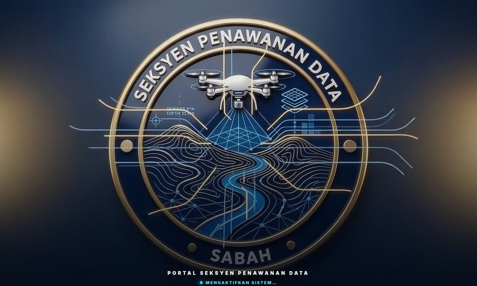
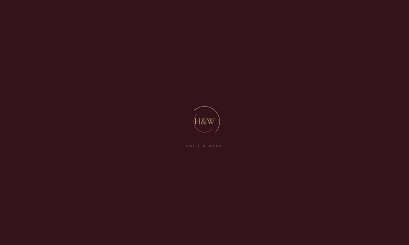
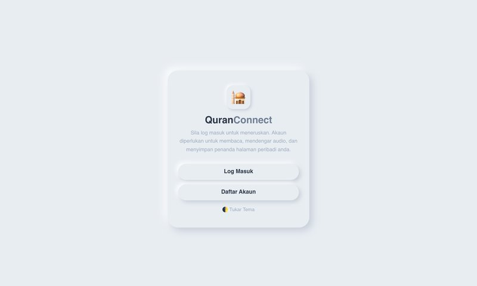

Farid Tasim — Software & Web Developer |
Membina portal web, sistem data, dan
aplikasi digital yang praktikal.
Hai, saya Farid Tasim. Seorang pembangun web dari Sabah, Malaysia yang komited membina penyelesaian perisian yang stabil, pantas, dan memudahkan urusan pengguna.
Projek Terpilih
Senarai portal rasmi dan aplikasi web yang pernah dibangunkan berserta tangkapan skrin dan status operasi terkini.

Seksyen Penawanan Data
Portal rasmi bagi pengurusan, penawanan maklumat data, dan rekod aktiviti organisasi secara tersusun dan berpusat.

Walimatul Urus — Hafiz & Wana
Laman web jemputan majlis perkahwinan digital yang dilengkapi pengesahan kehadiran (RSVP), panduan lokasi GPS, atur cara, dan ucapan tetamu.

QuranConnect
Aplikasi Al-Quran digital dalam talian dengan antaramuka kemas dan pantas untuk pembacaan mudah di pelbagai peranti.
Sabah Disaster Intelligence
Portal pemantauan pintar bencana negeri Sabah (banjir, amaran cuaca, situasi kecemasan) bagi membantu tindakan awal komuniti.
LeanTrack
Platform rekod pemakanan dan pengurusan diet untuk pengguna dalam memantau pengambilan kalori serta matlamat kesihatan.
Mengenai Saya
Bermula daripada minat mendalam terhadap dunia komputer dan teknologi, saya seronok belajar membina perisian dan laman web dari bawah. Saya bukanlah pakar serba tahu, tetapi saya sentiasa bersemangat untuk mencuba, membaiki ralat, dan menyiapkan projek yang benar-benar boleh digunapakai.
Daripada portal agensi rasmi untuk tugasan pengurusan data, sehinggalah ke sistem pemantauan bencana dan pelbagai alatan web lain — kepuasan saya adalah apabila sesuatu projek yang saya bangunkan memberi manfaat serta memudahkan urusan pengguna.
Alatan & Fokus Teknikal
Pembangunan Web Frontend
Membina antaramuka bersih, pantas, dan mesra peranti menggunakan JavaScript moden, Tailwind CSS, serta struktur HTML semantik.
Pengurusan Portal & Data
Penyelarasan aliran data operasi, penyimpanan rekod berpusat, serta rekaan borang dan dashboard pengurusan yang teratur.
Infrastruktur DNS & Edge
Integrasi domain kustom, keselamatan DNS Edge melalui Cloudflare, enkripsi sijil SSL automatik, dan konfigurasi penghalaan e-mel.
Ada idea projek atau ingin bekerjasama?
Saya sentiasa terbuka untuk membincangkan peluang pembangunan web, sistem maklumat, atau sebarang kolaborasi bermanfaat.